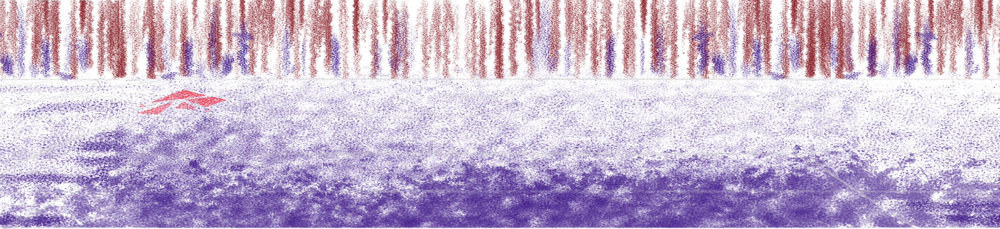

You start to feel nostalgic… though you don't know why, as if everything is behind you. Your eyes sweep from left to right. As you do, you feel all your energy draining from your body. Near the left wall, you notice a shard of glass... You feel like you're getting the meaning of you don't know what you've got 'til it's gone.
Panic for a bit (in a sad way)